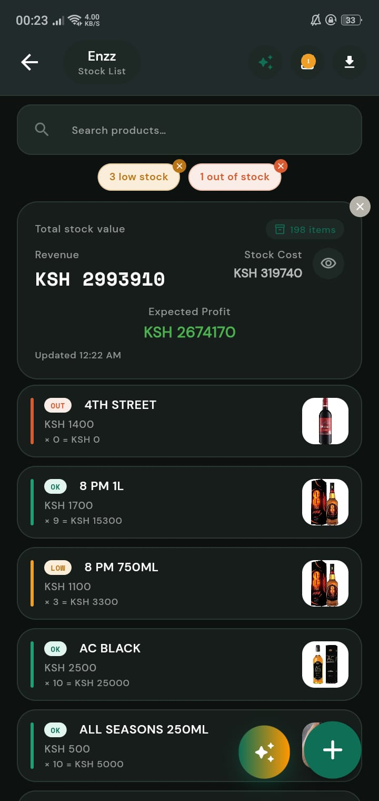
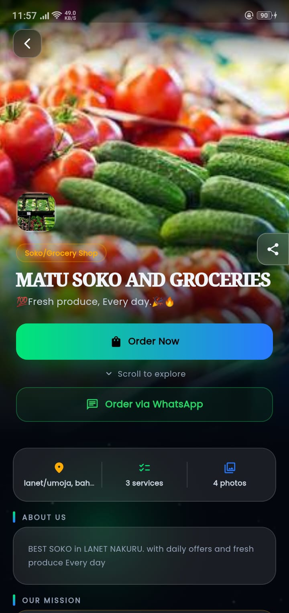
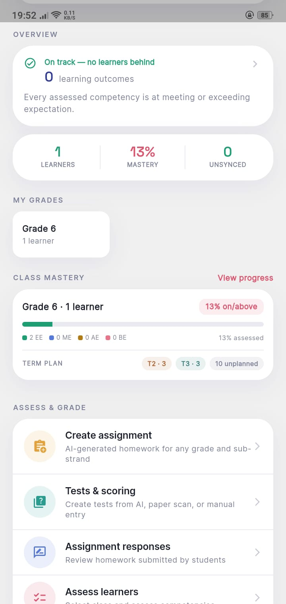
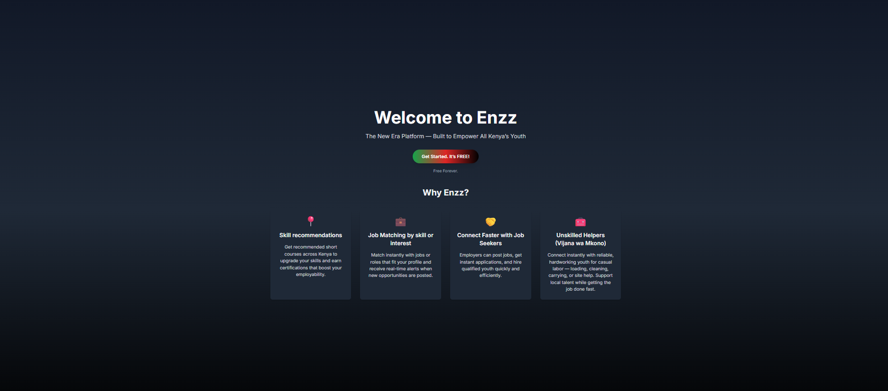

Enzz connects business, discovery, learning and work into one AI-powered ecosystem — built so a shop owner in an informal market, a learner in a rural school, and a job seeker without formal certification all get the same shot as anyone else. Access to a phone is no longer the bottleneck — output per person is, and every feature we ship is judged against whether it raises that number.
48.7M smartphones and 29.6M feature phones are already in active use in Kenya, and mobile money already reaches almost everyone. What's still scarce is output per second of human effort — how much real, sellable, provable, hireable value one person can produce per unit of time, on a basic phone, with no capital and no formal training. Every Enzz product exists to raise that number for a different moment in a person's economic life — by removing a specific tax on their effort.
Removes the tax of unrecognized ability, so a learner's real competence stops staying invisible.
Removes the tax of unrecognized experience and the labor of searching for work.
Removes the tax of manual record-keeping once someone is earning.
Removes the tax of invisible demand once someone has something to sell.
The test we apply before building anything: is this a friction reducer (an existing task done faster or more pleasantly) or an output multiplier (the system does the work, so the same person produces more in the same time)? Both are legitimate — but only multipliers deliver on the abundance thesis, so multiplier work wins when we have to choose.
Each Enzz platform closes a specific gap — and each one feeds the next. A learner becomes a candidate. A worker becomes an entrepreneur. A business becomes discoverable. A customer becomes new demand.

Put a business online and run it by just asking the AI — inventory, orders, credit, finances.
See the product →
The local marketplace that turns visibility into customers — discover, compare, order. Also on web at pata.enzz.co.ke.
See the product →
CBC-aligned learning support that tracks competency, not just marks — for teachers, learners and parents.
See the product →
Jobs and skills matching for certified and unskilled workers alike — formerly Enzz Fursa.
See the product →Kenya isn't short on connectivity. The gap is turning that connectivity into economic opportunity — that's what ENZZ is built to close.
Every feature is designed to close an access gap first — cost, geography, or certification — and add convenience second.
Every product strengthens the others. A business on Biashara is instantly discoverable on Pata — no extra setup.
We design for the realities of local businesses, schools and job seekers first — then take that model further.
We're always open to talking with engineers, designers, operators and investors who want to build technology that closes gaps.